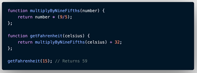

Latihan
1. Buat sebuah function untuk toko online kita. Ikuti poin-poin dibawah ini:
a. Function mempunyai 2 parameter yaitu nama pembeli dan produk yang dibeli
b. Function akan mengembalikan nilai "Terima kasih (nama pembeli) telah membeli produk (produk yang dibeli)"
c. Panggil function dengan menggunakan console.log()
2. Buat sebuah function helper untuk convert temperatur Celcius ke Fahrenherit dan sebaliknya. Ikuti poin-poin dibawah ini:
a. Buat sebuah function helper lalu gunakan pada function converternya. Seperti contoh dibawah ini.
Jadi kita tinggal membuat function helper dan function utama untuk convert fahrenheit ke Celcius

3. Kita akan membuat program untuk menghitung umur kucing dalam usia manusia. Poin-poinnya adalah:
- Pada usia 1 tahun, umur kucing adalah 15 kali umur manusia
- Pada usia 2 tahun, umur kucing adalah 24 kali umur manusia
- Pada usia 3 tahun (> 24 tahun) dan seterusnya umur kucing adalah 4 kali umur manusia.
Jadi jika umur kucing saat ini 4 tahun berarti dalam kalendar tahun kucing, umurnya adalah 32 tahun
- Buat sebuah ARROW function yang menerima parameter umur kucing berdasarkan perhitungan tahun manusia
4. Buat sebuah function untuk mengubah format semua string menjadi huruf kecil.
- Menerima 1 parameter string
- Gunakan single line block function
- Output adalah string yang telah diubah formatnya menjadi lower case
- Gunakan built in method string
5. Buat tampilan untuk seluruh soal diatas. Buat sekreatif teman-teman. 1 soal = 1 fitur = 1 page.